不用下江南，东城莲叶也田田！
来源：北京东城
听说~仲夏和荷花更配哦！
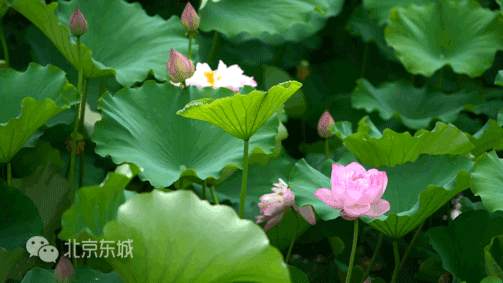夏天的燥热感
仿佛分分钟要表白的热血少年
vs
荷尖的粉嫩状
宛若突然被表白的娇羞少女
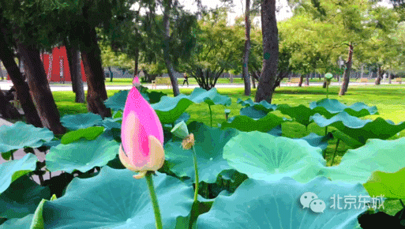~
夏日里贯耳的声声蝉鸣
vs
荷塘里静立的亭亭花苞
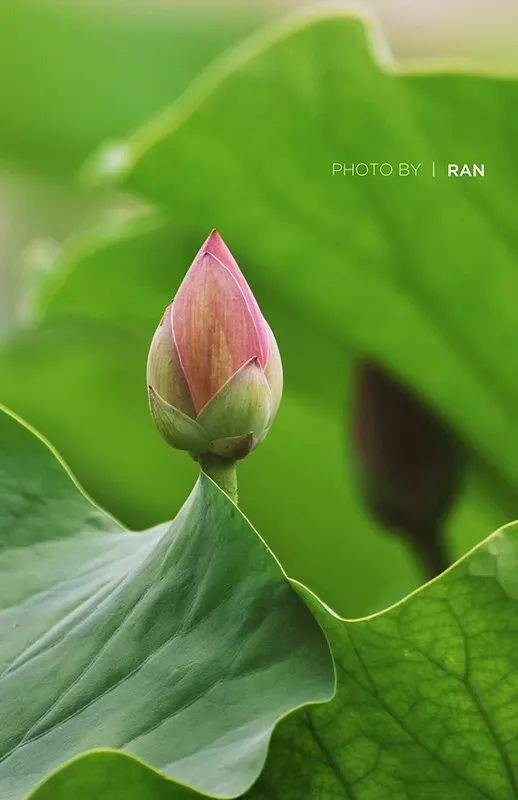~
当骄阳在大地上倾泻
vs
露珠也在荷叶上舞蹈
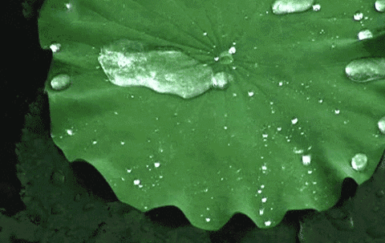既然仲夏和荷花这么配
收下这份小东自制东城赏荷地图
这个夏天一定超！好！过！
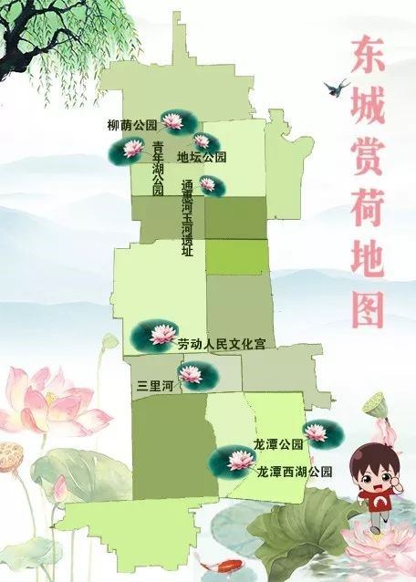柳荫公园
柳荫公园是一座具有田园风光的山村野趣公园，占地面积17.47公顷，其中水面约7公顷。
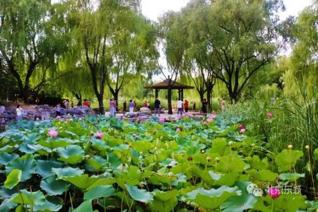漫步堤岸，一片绿波随风翻滚，万柄红荷散点摇曳。
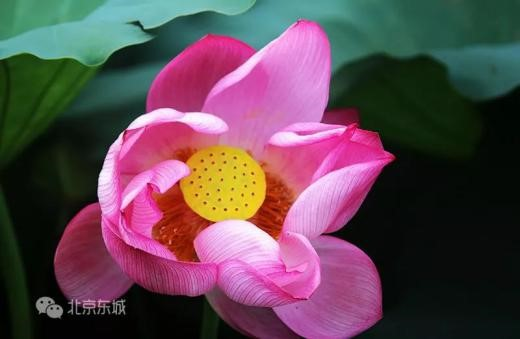 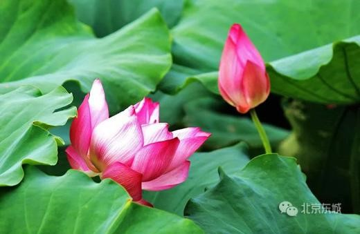 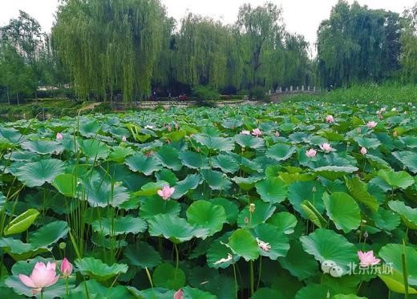 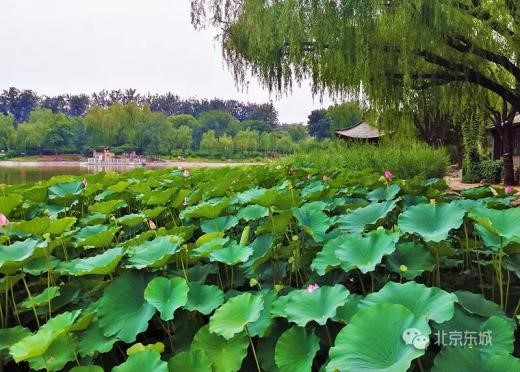这里除了满池的荷花，看野鸭戏水、苍鹭捕鱼，也是一景。
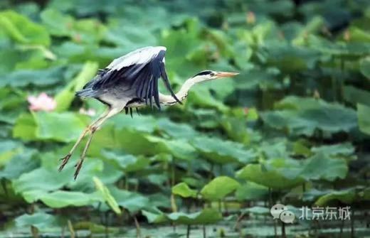门票：免费
开放时间：6:00-22:00
地址：东城区安定门外黄寺大街8号
青年湖公园
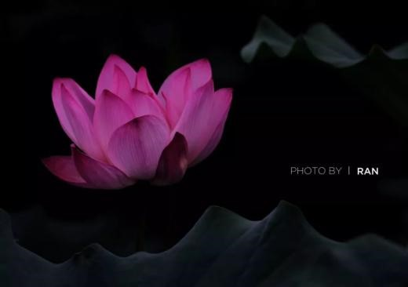进入6月，青年湖公园的荷花陆续绽放，虽然大部分还是“小荷才露尖尖角”的萌态，但“接天莲叶无穷碧”的景象已见雏形。
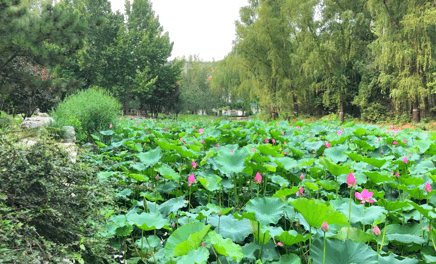 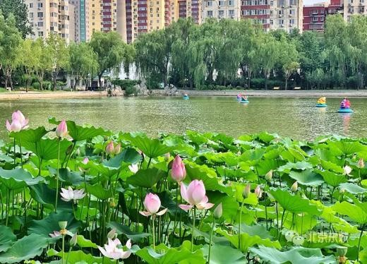这个夏天，来青年湖公园水上世界戏水消夏之余，不妨来这荷花池畔走一走，惬意指数五颗星喔~
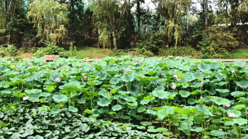门票：免费
开放时间：6:00-21:00
地址：东城区安定门外大街路西
地坛公园
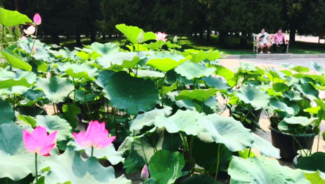夏日的地坛公园古木参天、环境清幽。
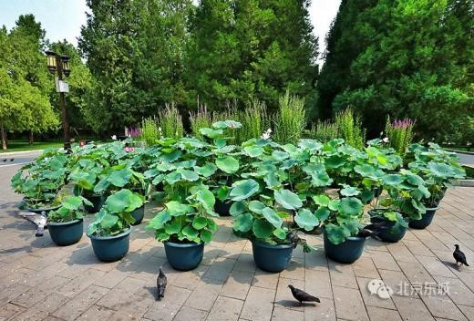这里的荷花以盆栽荷花为主，共200盆，分布在东西主路以及方泽坛北门广场。~
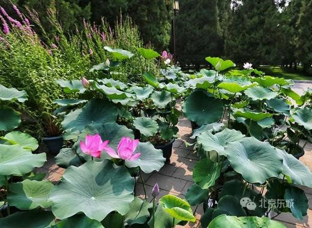 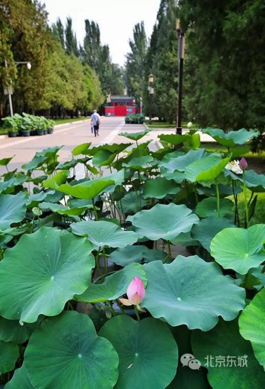门票：2元
开放时间：6:00-21:30
地址：东城区安定门外大街
玉河
南锣鼓巷和什刹海之间，玉河蜿蜒流淌，河道中荷花正盛。
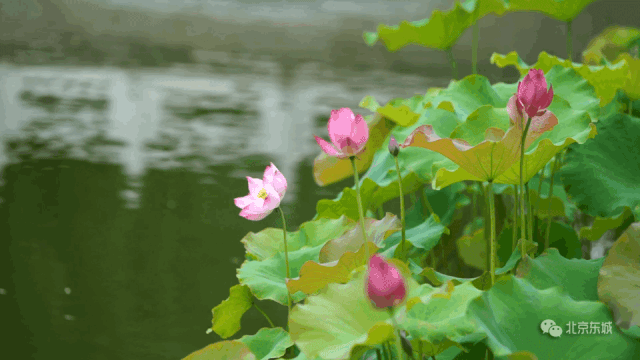清朝诗人李静山曾为玉河的水巷夜景赋诗：“十里藕花香不断，晚风吹过步粮桥。”~
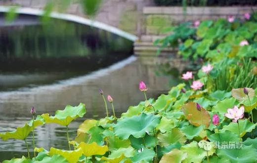 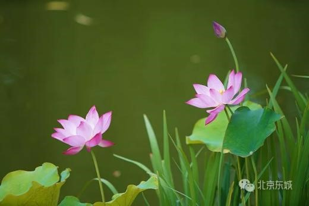门票：免费
开放时间：全天
地址：东城区地安门东大街
劳动人民文化宫
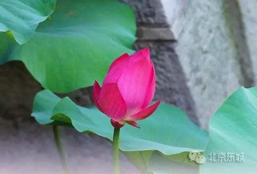北京市劳动人民文化宫原为明清两代皇帝祭祀祖先的太庙。这里的荷花主要生长在金水河中，在古建的掩映下愈显清丽。
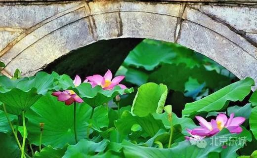 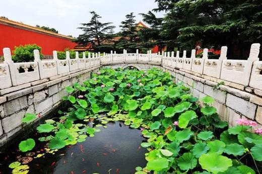门票：2元
开放时间：6:30-19:30（春夏季）
地址：天安门东侧
三里河
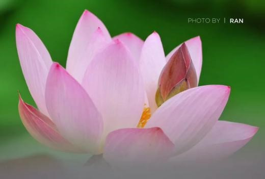闹中取静的三里河，草木在水边繁茂，锦鲤在水中游弋。
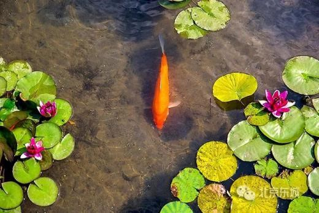这里小荷初绽，静待七八月时的盛放。
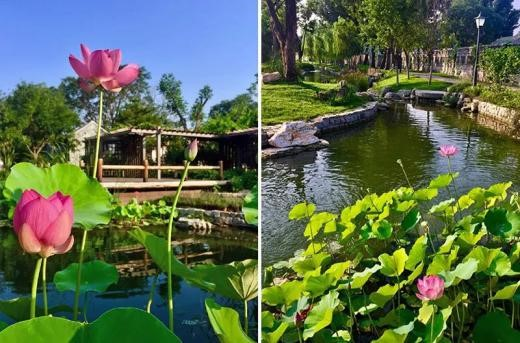门票：免费
开放时间：全天
地址：东城区南芦草园胡同与群智胡同交叉口东50米
龙潭公园
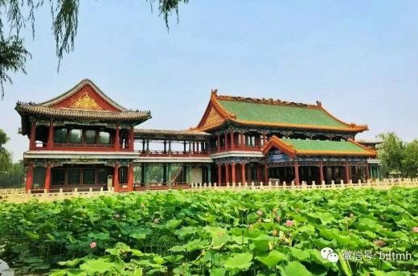龙潭公园的夏荷现在正值最佳观赏期，主要分布在公园南岸和龙吟阁景区附近。
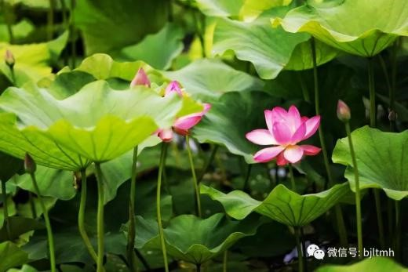 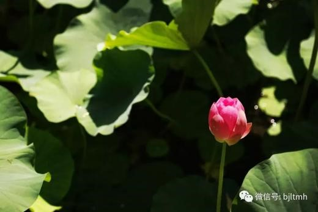水面之上、绿叶之中，花儿争奇斗艳、竞相开放，无边风景待来人。
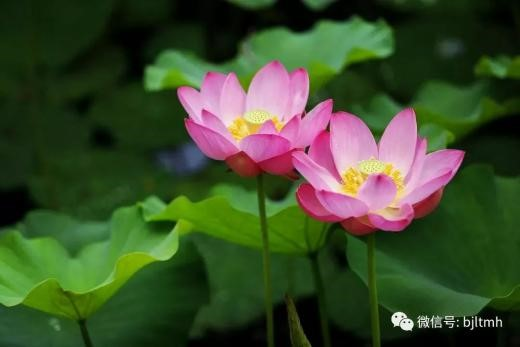门票：2元
开放时间：6:00-21:00
地址：东城区龙潭路8号
龙潭西湖公园
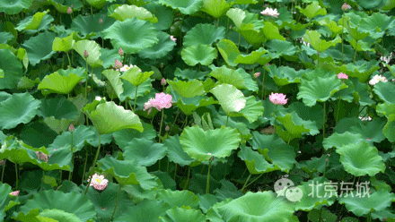龙潭西湖公园可以说是“人少、冷门、景色美”的小众赏荷公园，“柳岸观荷”是这里的一大特色。
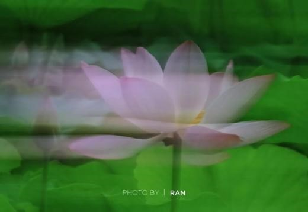从公园北门向东游览柳荷轩绿地，再环湖游览是推荐的最佳赏荷路线。~
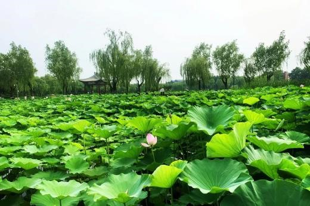夏日傍晚，漫步湖畔赏荷，想想就很美呢~
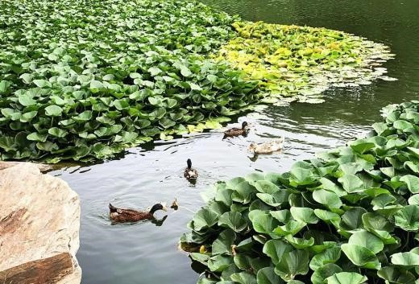 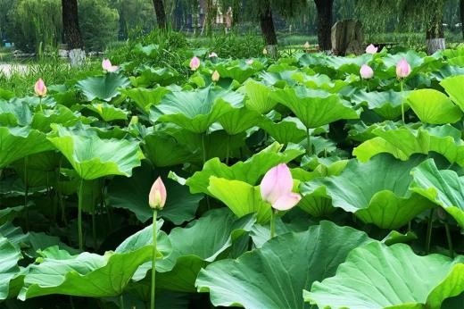门票：免费
开放时间：6:00-22:00
地址：东城区龙潭路甲1号
看完小东的推荐
你是什么感觉？
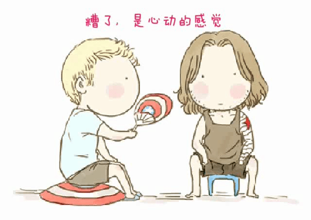没错，是“田田”的夏天丫~
“荷”你一起丫！